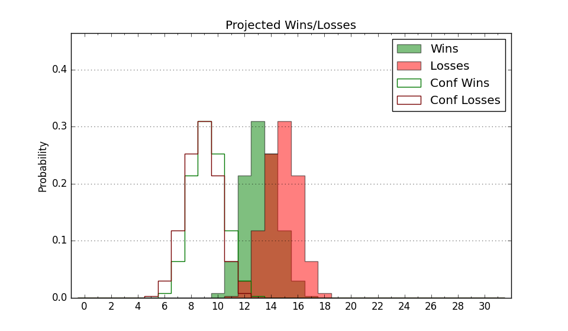

| Home | Game Probabilities | Conferences | Preseason Predictions | Odds Charts | NCAA Tournament |
| City: | Spartanburg, South Carolina | |
| Conference: | Southern (3rd)
| |
| Record: | 10-8 (Conf) 17-13 (Overall) | |
| Ratings: | Comp.: 6.6 (105th) Net: 6.6 (105th) Off: 107.2 (81st) Def: 100.6 (154th) SoR: 0.0 (141st) |
| Remaining | ||||||
|---|---|---|---|---|---|---|
| Date | Opponent | Win Prob | Pred. | |||
| Previous | Game Score | |||||
| Date | Opponent | Win Prob | Result | Off | Def | Net |
| 11/12 | @Clemson (79) | 25.4% | L 68-76 | -4.5 | 4.3 | -0.1 |
| 11/19 | Hampton (326) | 94.9% | W 77-60 | 1.9 | 1.7 | 3.6 |
| 11/21 | Georgia Southern (250) | 88.1% | W 70-52 | 7.6 | 5.4 | 13.0 |
| 11/23 | @South Carolina (101) | 33.9% | L 74-85 | 1.9 | -20.1 | -18.2 |
| 11/28 | @Georgia (216) | 60.1% | W 68-65 | -8.9 | 7.5 | -1.4 |
| 12/1 | Richmond (92) | 58.1% | L 64-73 | -7.6 | -15.9 | -23.5 |
| 12/5 | Kennesaw St. (205) | 82.7% | W 88-62 | 29.3 | -2.5 | 26.9 |
| 12/8 | @Gardner Webb (169) | 51.0% | W 78-70 | 9.8 | -0.8 | 9.0 |
| 12/12 | @Coastal Carolina (156) | 48.4% | L 59-60 | -8.2 | 3.1 | -5.2 |
| 12/18 | @Presbyterian (278) | 73.9% | W 76-49 | 21.1 | 14.9 | 36.0 |
| 12/29 | VMI (147) | 74.8% | L 73-80 | -14.0 | -13.4 | -27.5 |
| 1/5 | Chattanooga (68) | 50.8% | L 67-75 | -7.5 | -5.8 | -13.3 |
| 1/8 | @East Tennessee St. (179) | 53.1% | W 68-57 | -4.0 | 18.6 | 14.7 |
| 1/10 | @UNC Greensboro (170) | 51.1% | L 54-58 | -14.1 | 3.5 | -10.6 |
| 1/12 | Samford (183) | 80.1% | W 87-64 | 29.2 | 1.0 | 30.2 |
| 1/15 | @Western Carolina (285) | 75.6% | W 84-64 | 18.6 | 7.5 | 26.1 |
| 1/19 | The Citadel (223) | 84.7% | W 89-77 | 11.9 | -8.2 | 3.7 |
| 1/22 | Furman (77) | 53.4% | L 50-75 | -11.6 | -25.5 | -37.2 |
| 1/26 | @Chattanooga (68) | 23.3% | L 60-71 | -7.6 | -5.9 | -13.5 |
| 1/29 | UNC Greensboro (170) | 78.1% | W 85-66 | 27.8 | -12.2 | 15.6 |
| 1/31 | @Mercer (184) | 54.3% | L 62-67 | -8.7 | 2.9 | -5.8 |
| 2/5 | East Tennessee St. (179) | 79.4% | W 62-60 | -7.3 | -5.5 | -12.9 |
| 2/9 | @Samford (183) | 54.2% | L 60-65 | -24.5 | 17.3 | -7.2 |
| 2/12 | Western Carolina (285) | 91.4% | W 69-57 | -7.3 | 6.1 | -1.1 |
| 2/16 | @The Citadel (223) | 61.9% | W 65-58 | -11.1 | 18.5 | 7.4 |
| 2/19 | @Furman (77) | 25.2% | L 69-70 | 14.4 | 3.0 | 17.5 |
| 2/23 | @VMI (147) | 46.6% | W 83-72 | 9.7 | 15.8 | 25.6 |
| 2/26 | Mercer (184) | 80.2% | W 74-67 | 0.4 | -8.9 | -8.5 |
| 3/5 | (N) VMI (147) | 61.7% | W 68-66 | -10.6 | 5.5 | -5.0 |
| 3/6 | (N) Chattanooga (68) | 35.9% | L 56-79 | -13.4 | -21.5 | -34.9 |
| Stats & Trends | |||||
|---|---|---|---|---|---|
| Current | Day | Week | Month | Season | |
| Composite | 6.6 | +0.0 | -0.8 | -1.2 | +0.5 |
| Comp Rank | 105 | +1 | -- | -- | +30 |
| Net Efficiency | 6.6 | +0.0 | -0.8 | -1.2 | -- |
| Net Rank | 105 | +1 | -- | -- | -- |
| Off Efficiency | 107.2 | +0.0 | -0.8 | -2.1 | -- |
| Off Rank | 81 | +1 | +7 | -15 | -- |
| Def Efficiency | 100.6 | -0.0 | +0.1 | +0.9 | -- |
| Def Rank | 154 | -- | -19 | +5 | -- |
| SoS Rank | 136 | +2 | -4 | +4 | -- |
| Exp. Wins | 17.0 | -- | -- | +1.8 | -0.9 |
| Exp. Conf Wins | 10.0 | -- | -- | +0.8 | -0.8 |
| Conf Champ Prob | 0.0 | -- | -- | -- | -18.7 |

| Advanced Stats | ||
|---|---|---|
| Stat | Value | Rank |
| Off Eff FG % | 0.538 | 53 |
| Off Ast Ratio | 0.148 | 131 |
| Off ORB% | 0.256 | 184 |
| Off TO Rate | 0.168 | 259 |
| Off FT Ratio | 0.280 | 247 |
| Def Eff FG % | 0.529 | 277 |
| Def Ast Ratio | 0.141 | 182 |
| Def ORB% | 0.207 | 20 |
| Def TO Rate | 0.174 | 65 |
| Def FT Ratio | 0.308 | 199 |